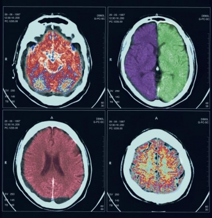

The United States remains the largest medical device market in the world with a market size of around $110 billion, and it is expected to reach $133 billion by 2016. The U.S. market value represented about 38 percent of the global medical device market in 2012. U.S. exports of medical devices in key product categories identified by the Department of Commerce (DOC) exceeded $44 billion in 2012, a more than 7 percent increase from the previous year.
There are more than 6,500 medical device companies in the U.S., mostly small and medium-sized enterprises (SMEs). More than 80 percent of medical device companies have fewer than 50 employees, and many (notably innovative start-up companies) have little or no sales revenue. Medical device companies are located throughout the country, but are mainly concentrated in regions known for other high-technology industries, such as microelectronics and biotechnology. The states with the highest number of medical device companies include California, Florida, New York, Pennsylvania, Michigan, Massachusetts, Illinois, Minnesota and Georgia. Other states with significant sector employment include Washington, Wisconsin, and Texas.
U.S. medical device companies are highly regarded globally for their innovations and high technology products. Investment in medical device research and development more than doubled during the 1990s, and research and development investment in the domestic sector remains more than twice the average for all U.S. manufacturers.
The United States also holds a competitive advantage in several industries that the medical device industry relies upon, including microelectronics, telecommunications, instrumentation, biotechnology, and software development. Collaborations have led to recent advances including neuro-stimulators, stent technologies, biomarkers, robotic assistance and implantable electronic devices. Since the industry is fueled by innovation and the ongoing quest for better ways of treating or diagnosing medical problems, the future growth of this sector remains positive.
Electro-medical equipment: Includes a variety of powered devices, such as pacemakers, patient-monitoring systems, MRI machines, diagnostic imaging equipment (including informatics equipment), and ultrasonic scanning devices.
Irradiation apparatuses: Includes X-ray devices and other diagnostic imaging, as well as computed tomography equipment.
Surgical and medical instruments: Includes anesthesia apparatuses, orthopedic instruments, optical diagnostic apparatuses, blood transfusion devices, syringes, hypodermic needles, and catheters.
Surgical appliances and supplies: Includes artificial joints and limbs, stents, orthopedic appliances, surgical dressings, disposable surgical drapes, hydrotherapy appliances, surgical kits, rubber medical and surgical gloves, and wheelchairs.
Dental equipment and supplies: Includes equipment, instruments, and supplies used by dentists, dental hygienists, and laboratories. Specific products include dental hand instruments, plaster, drills, amalgams, cements, sterilizers, and dental chairs.